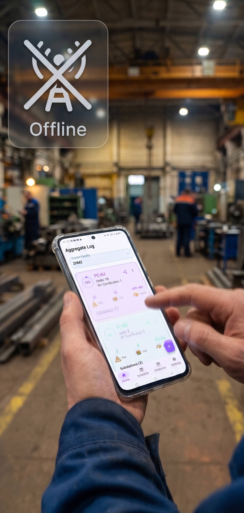
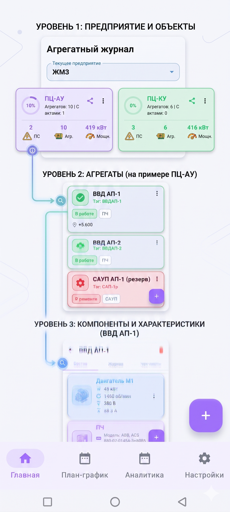

Приложение спроектировано так, чтобы работать на 100% автономно в цехах и подвалах без доступа к интернету.
The app is designed to be 100% autonomous, working flawlessly in workshops and basements without cellular network.

Забудьте про хаос в записях. Находите любой нужный узел за пару секунд благодаря строгой логике построения базы.
Forget about chaotic records. Find any necessary node in a few seconds thanks to the strict database structure logic.

Распределяйте задачи по дням месяца и контролируйте их выполнение с помощью удобного календаря.
Distribute tasks by days of the month and track their completion using a convenient calendar.
Скриншот: План-график
Screenshot: Planner Calendar
Контролируйте производственные показатели прямо с экрана телефона в режиме реального времени.
Monitor production metrics directly from your phone screen in real time.
Скриншот: Дашборд аналитики
Screenshot: Analytics Dashboard
Приложение само напишет отчет! Подключите бота и настройте автоматическую выгрузку данных.
The app will write reports for you! Connect a bot and set up automatic data export.
Скриншот: Отчеты в Telegram
Screenshot: Telegram Reports
Больше не нужно переписывать данные в Word. Генерируйте готовые к печати документы прямо на телефоне.
No more rewriting data in Word. Generate ready-to-print documents directly on your phone.
Скриншот: Готовый PDF акт
Screenshot: Generated PDF Act
Быстрый старт для новых пользователей. Загрузите сотни агрегатов разом с помощью специального шаблона.
Приложение автоматически распознает структуру и создаст необходимые Предприятия, Цеха и Подстанции, раскидав оборудование по своим местам.
Quick start for new users. Upload hundreds of units at once using a special spreadsheet template.
The app automatically recognizes the structure and creates the necessary Enterprises, Workshops, and Substations, sorting the equipment into its places.
Скриншот: Экран импорта
Screenshot: Import Screen
Управляйте своими базами данных как профессионал.
.ijb локально или отправляйте прямо в Telegram.Manage your databases like a professional.
.ijb archive file locally or send it directly to Telegram.Скриншот: Управление БД
Screenshot: Database Management